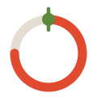
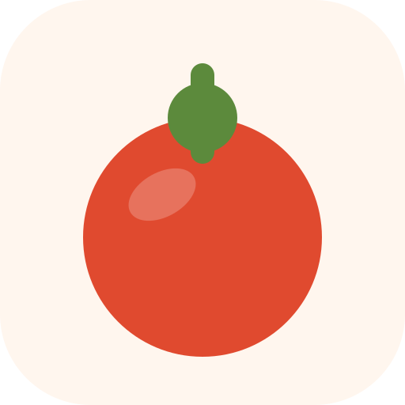

BRAND GUIDELINES · v1 · 2026-08-23

Tomato
The agentic Pomodoro. A calm menu-bar timer for focus without guilt, and stopping without loss.
Standalone product brand · Linux first · web-tech (Tauri v2)
01 · The idea
Focus without guilt.
Tomato runs 15-minute focus sprints and nudges a real break at the boundary. The twist: your AI agents keep working while you step away, so the break costs nothing — delegated work advances while you rest. The emotional job is calm, in control, healthy. It informs; it never scolds.
DO
"Time to break." · "Wrap up — break in 2:00." Spare, kind, non-judgmental. Respect the OS Do-Not-Disturb.
DON'T
No guilt-trips, fake urgency, streak anxiety, or punishing a skipped break. Never loud — it lives in the bar all day.
02 · Logo & marks
The mark is the ring.
Primary mark
Ring + calyx · color
Monochrome
currentColor · template

App icon
Launcher · full color
Wordmark — Hanken Grotesk 800, −0.02em. Clearspace ≥ the ring diameter on all sides. Never recolor the fruit, stretch, add effects, or place the color mark on a busy field.
03 · Color
Warm neutrals, semantic states.
Every state pairs its color with a glyph (● focus, ◑ grace, ◼ break, ▲ over-run), so meaning never rests on hue — color-blind-safe, WCAG-AA in both themes.
LIGHT
tomato #e04a2f
leaf #5c8a3c
bg #f7f3ee
surface2 #f0eae2
text #26201c
● focus #128a7a
◑ grace #c98420
◼ break #4a6bcc
▲ overrun #cf3b30
info #3f79cf
DARK
tomato #f0603f
leaf #7bab55
bg #171310
surface2 #2a241f
text #f2ebe2
● focus #2bb6a2
◑ grace #e5a23e
◼ break #7a95e6
▲ overrun #eb5a4d
info #6fa0ee
04 · Typography
Hanken Grotesk
Display & UI · weights 400–800 · Google Fonts / OFL
A warm humanist grotesk — calm and legible in a small window. Titles at 700–800 with tight tracking; body at 400 for comfortable reading.
IBM PLEX MONO
14:59
Timers & numerals · tabular · +1:24
05 · The menu-bar ring · hero asset
Drawn live, all day.
GEOMETRY — DRAW PROGRAMMATICALLY
diameter = 84% of canvas
stroke = 15% of diameter
start = −90° (12 o'clock)
direction = clockwise
cap = round · inner gap 2px
track = --border (α .9)
canvas = 16 / 22 / 24 / 32 · @2x
macOS mono template · Linux color
06 · Iconography
24-grid, 2px stroke, currentColor.
One consistent family. Round caps and joins; solid fills only for transport controls.
07 · Motion & hand-off
Ring fill
Continuous, never ticking. State-color crossfade 240ms ease.
Toast / card
Toast slides in 200ms; card fades + rises 8px in 180ms. Honors reduce-motion.
Machine-readable tokens
Ships as tomato-tokens.json (W3C DTCG, Style-Dictionary compatible, light + dark) and tomato-tokens.css (custom properties with a dark override and reduced-motion). Groups: color · ring · font · space · radius · border · shadow · opacity · duration · easing · icon.